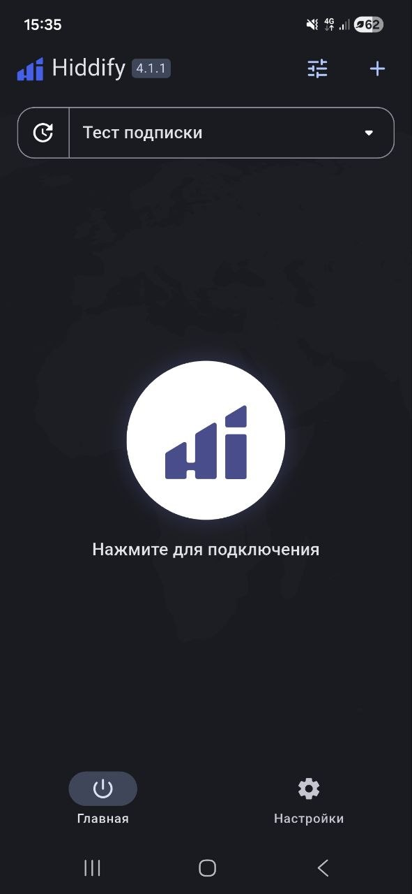
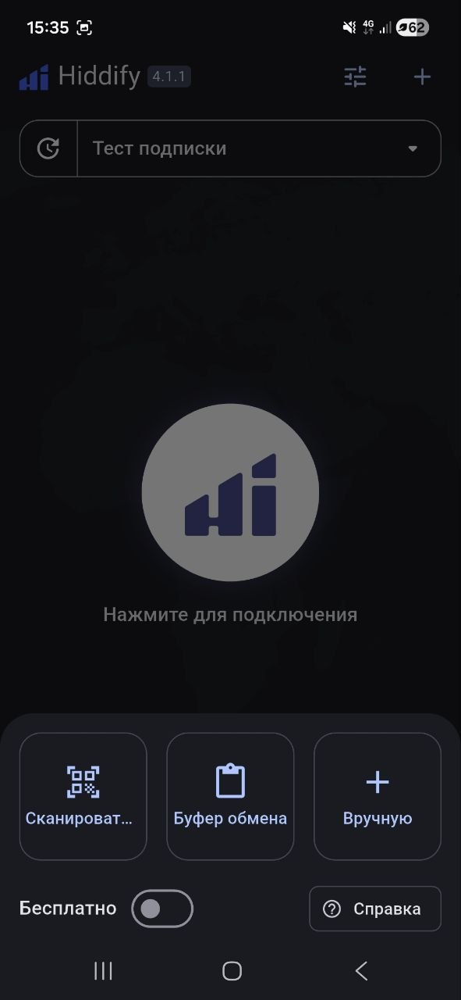
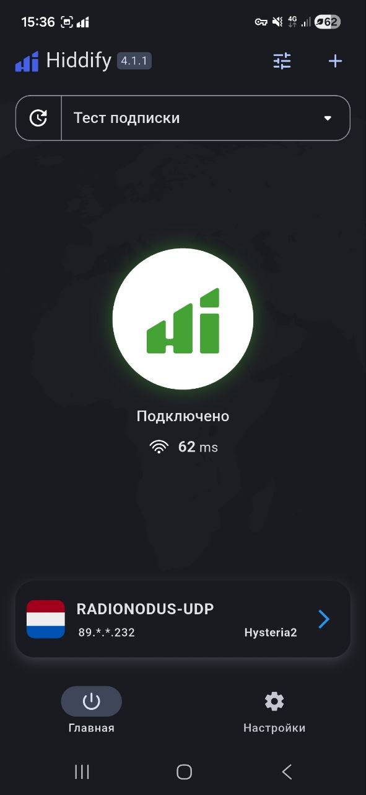
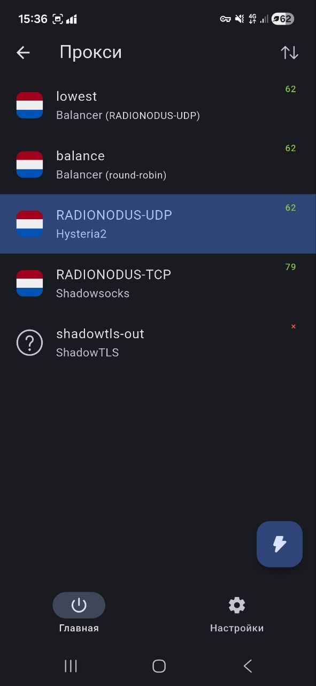

Инструкция
Как подключиться —
пошагово и понятно
Скопируй ссылку на конфиг
Вернись на главную страницу и нажми большую зелёную кнопку СКОПИРОВАТЬ ССЫЛКУ НА КОНФИГ.
Ссылка скопируется в буфер обмена — она понадобится на шаге 4. Ничего дополнительно делать не нужно.
http://91.142.75.205/sub — это адрес твоей подписки. Приложение само разберётся что с ней делать.Скачай и установи Hiddify
Нажми кнопку ниже — откроется Google Play. Найди кнопку Установить и дождись окончания загрузки.
Открой Hiddify
После установки открой приложение. Ты увидишь пустой экран с надписью «Нажмите для подключения» — это нормально, конфигурации ещё нет.

Добавь подписку через буфер обмена
Нажми кнопку + в правом верхнем углу. Снизу выедет меню с тремя вариантами:
Выбери «Буфер обмена» — приложение само возьмёт ссылку которую ты скопировал на шаге 1.

Подожди загрузки и подключись
Приложение скачает настройки и сразу предложит подключиться. Нажми на большой круг по центру экрана.
Android спросит разрешение создать VPN-подключение — нажми Разрешить. Это стандартный системный запрос, без него VPN не работает ни в одном приложении.
Ты подключён
Экран станет белым, появится надпись «Подключено» и пинг в миллисекундах. Внизу видно какой протокол выбран — обычно Hysteria2 как самый быстрый.

Про список прокси — не пугайся
Если зайдёшь в список прокси, увидишь несколько строк. Одна из них — shadowtls-out — будет с красным крестиком. Это нормально: это вспомогательный транспорт, не самостоятельное соединение.

Скопируй ссылку на конфиг
Вернись на главную страницу и нажми зелёную кнопку ЗАБРАТЬ КОНФИГ.
Ссылка скопируется в буфер обмена автоматически — она понадобится на шаге 5. Ничего дополнительно делать не нужно.
Скачай и установи Karing
Нажми ссылку ниже — откроется App Store. Нажми Загрузить и дождись установки.
Открой Karing и разреши всё
При первом запуске приложение попросит несколько разрешений — соглашайся на все. Без них VPN не работает:
• Уведомления — нажми Разрешить
• Доступ к сети — нажми Разрешить
• Любые другие запросы — тоже Разрешить
Пройди начальную настройку
Приложение покажет несколько экранов с приветствием и настройками:
• Выбери язык — Русский или любой удобный
• На каждом следующем экране нажимай Далее
• Ничего не меняй — настройки по умолчанию подходят
На последнем экране — выбери «Буфер обмена»
На финальном экране начальной настройки приложение спросит как добавить конфигурацию. Ты увидишь несколько вариантов.
Выбери «Копировать из буфера обмена» — приложение возьмёт ссылку которую ты скопировал на шаге 1.
Разреши вставку и подтверди пин-кодом
iOS спросит: «Karing хочет вставить содержимое из буфера обмена» — нажми Разрешить.
Затем телефон попросит подтвердить Face ID или пин-код — это стандартная защита iOS при добавлении VPN-конфигурации. Подтверди.
Нажми кнопку запуска
После загрузки конфигурации на главном экране появится большая кнопка по центру внизу — нажми её.
Приложение автоматически протестирует оба сервера и выберет самый быстрый маршрут.
Готово — ты в эфире
Чтобы отключиться — нажми ту же кнопку ещё раз или перейди в Настройки → VPN и выключи.
Чтобы обновить конфиг в будущем — зайди на главную, забери конфиг заново и импортируй через то же меню в приложении.
Для компьютера
На Linux рекомендуем запускать sing-box напрямую как системный демон — это самый стабильный вариант.
На Windows и macOS установи Hiddify Desktop — работает аналогично мобильной версии.
Ссылка на конфиг та же: http://91.142.75.205/sub
Частые вопросы
Это безопасно?
Да. Hiddify и Karing — приложения с открытым исходным кодом, можно проверить самостоятельно. RADIONODUS не ведёт логи и технически не может знать что ты делаешь в интернете — мы намеренно так построили инфраструктуру.
«Буфер обмена» недоступен / конфиг не вставляется
Вернись на главную страницу и снова нажми кнопку «Забрать конфиг». Потом сразу, не открывая другие приложения, вернись в Hiddify или Karing и попробуй импорт ещё раз. Буфер очищается при переключении между приложениями на некоторых устройствах.
Подключение есть, но сайты не открываются
Выключи VPN и включи снова. Если не помогает — зайди на главную, забери конфиг заново. В приложении удали старый профиль и добавь по новой ссылке.
При смене сети WiFi → мобильная VPN отваливается
Это стандартное поведение всех VPN-приложений на iOS и Android. После смены сети нужно вручную переподключиться — нажми выключить и включить в Hiddify.
Перестало работать через несколько дней
В приложении найди кнопку «Обновить подписку» — оно заново скачает актуальные настройки. Делай это с отключённым VPN, иначе обновление не пройдёт.
Это бесплатно?
Да, всегда. Проект существует на добровольных взносах. Если хочешь поддержать — напиши /donate в телеграм-бот @radionodus_bot.